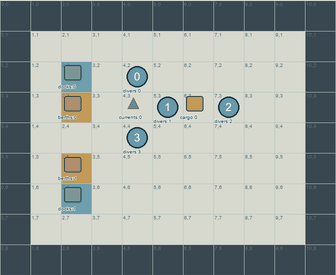
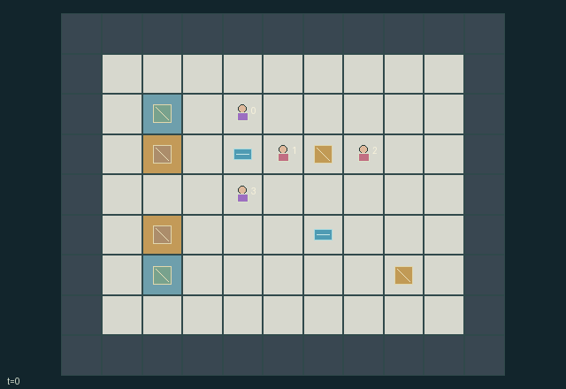

GI155 · Echo Tow

Original recording scope: Public display view · Mode: Fixed-script demonstration
Additional generated state replay (different trajectory / full-state debug)

Recover two heavy cargo objects at matching berths by coordinating two attached tugs, scout information, current diversion and shared oxygen resupply.
Identity and original contract
4 independently actionable roles; 14 discrete commands per role; 165 native observation columns per role; original horizon 144 steps. Declared per-step reward range: -1 to 2. Observation regime: partially_observable.
Source SHA-256: 79ada6b56599ca59b250462366078ce1963c5d018bc64458658179e09f04dc79
The objective, rewards, population, map and horizon remain original. A preview is not a success claim.
Objective and gameplay
Recover two heavy cargo objects at matching berths by coordinating two attached tugs, scout information, current diversion and shared oxygen resupply.
Cargo moves only with opposite tug alignment and matching movement commands. Engineer diversion changes whether a cargo can enter a current cell; scout broadcasts alter other roles received observations; nearby divers compete for one dock service per tick.
- Tugs 1 and 2 must attach to opposite horizontal flanks and issue the same movement direction to translate a cargo and both tugs.
- Whole-body terrain, cargo and other-diver collisions can block a tow. Unhooked movement cannot enter active cargo cells.
- A flowing current blocks cargo entry and consumes extra oxygen from a diver on its cell.
- Engineer 3 can divert a nearby current for four ticks; diversion occurs before towing.
- Scout 0 can ping and publish an actual observed object location. Radio snapshots age and expire rather than silently following moving cargo.
- Every crew spends one oxygen each live tick; movement/towing and specialist actions have additional costs.
- A dock serves at most one adjacent requester per tick, with rotating priority and finite replenishing stock.
- Adjacent divers may transfer three oxygen. Cargo does not respawn or duplicate.
- Both recoveries complete the task; oxygen depletion before completion triggers a joint abort.
Ending: Both cargo recovered ends naturally. Any crew oxygen reaching zero before complete recovery causes joint emergency abort. Otherwise the horizon is 144.
What this game explores
Resource commons & externalities: An action changes a persistent resource or burden that another role also encounters. Compare extraction with maintenance and record the downstream resource trajectory.
Joint transport & shared access: Positions, load geometry, occupancy and persistent access constrain whose action can succeed next. Distinguish physical handoff, shared controls and simultaneous force from a cosmetic cooperation label.
These are questions supported by rule structure, not observed learning effects.
Play it: operating walkthrough
crucibles play --game gi155Keep Python running and open its printed address. Select this game, set a seed and press Create session. The game itself is always English.
Assign a role range to Host with Assign / take over, or Assign all roles. Invite a second participant with Create player invitation, then assign a disjoint subset. Every original role is available.
For every owned role choose a legal command and press Queue. Arrow keys / WASD queue a declared directional action for the current role camera when available. Space or Advance one joint step advances everyone together. Non-directional games use the selectors.
Unqueued roles use the labelled untrained uniform-legal policy. Take over or release roles before the next step without resetting. Full-state debug is privileged and permanently logged; role cameras preserve permissions. Close the session to retain logs. Server restart does not restore sessions.
Complete command reference
IDs and English labels exactly match the manifest. Availability depends on role, resources, location and phase. An available action can still have no productive effect.
0·Wait
1·Move north or request synchronized northward tow
2·Move east or request synchronized eastward tow
3·Move south or request synchronized southward tow
4·Move west or request synchronized westward tow
5·Tug: attach at a horizontal cargo flank, or release
6·Scout: extend sonar radius to six for three ticks
7·Scout: broadcast nearest visible active cargo, otherwise nearest visible current
8·Engineer: divert nearest adjacent current for four ticks
9·Request oxygen from nearest adjacent dock
10·Give three oxygen to adjacent agent 0
11·Give three oxygen to adjacent agent 1
12·Give three oxygen to adjacent agent 2
13·Give three oxygen to adjacent agent 3
Roles and capability identifiers
These original role names describe capabilities, not interchangeable skins. Check each owned role's legal selector before planning handoffs.
agent_0·Scout with radius-four sonar and temporary radius-six ping
agent_1·Left/right-capable tug 1
agent_2·Left/right-capable tug 2
agent_3·Current-diversion engineer
Information and observation permissions
Map, docks/stock, berths, recovery announcements, ping timer and aged radio snapshot are public. The scout sees within Manhattan radius four or six after ping; other roles see within radius two. These are range-only sensors without occlusion. The snapshot is not privileged live tracking.
The GIF is full-state debug and may reveal hidden entities or private state. Train on obs[agent], not the picture, state tree or another role's private row. Field slices and visibility are in the original manifest.
Reinforcement-learning integration
import jax
from crucibles_jaxmarl import make
env = make("gi155")
key = jax.random.PRNGKey(0)
key, rk, ak, sk = jax.random.split(key, 4)
obs, state = jax.jit(env.reset)(rk)
actions = env.sample_actions(ak, state)
obs, state, rewards, dones, info = jax.jit(env.step_env)(sk, state, actions)
done = dones["__all__"]Observations are float32 vectors of width 165; actions are scalar int32; masks have 14 entries. Supply all 4 roles each transition. Masked sampling is an engineering reference, not a trained learner.
step_env retains terminal data without reset. step performs outer autoreset and keeps terminal data in info["raw_state"] and info["raw_observation"]. Use dones["__all__"] for episode boundaries; separate completion, failure and time limit in analysis.
JIT or vmap equal identities and shapes. Split independent reset, policy and transition keys. Group different shapes explicitly; do not shrink the population or horizon. Host rendering stays outside training.
Training questions and fair evaluation
Define valid completion from the objective before fitting. Preserve original rewards and also report real deliveries/services, losses, resource state, unresolved episodes and per-role returns. Animation is not a reward signal.
An action changes a persistent resource or burden that another role also encounters. Compare extraction with maintenance and record the downstream resource trajectory.
Positions, load geometry, occupancy and persistent access constrain whose action can succeed next. Distinguish physical handoff, shared controls and simultaneous force from a cosmetic cooperation label.
Compare memory, communication or centralized critics under matched actor information. Declare critic access; keep actor inputs role-filtered. Match partner/opponent distributions, masks, compute and checkpoint selection. Final tests never enter fitting or selection.
Independent training runs or source-pairing blocks are inferential units; episodes from one policy are not independent training replications. Save hashes, keys, versions, device, time and cost. Negative, zero, failed and indeterminate outcomes are valid. No trained checkpoint or target score is supplied.
Classification and evidence
Overlapping editorial labels are reading aids, not proof of novelty, difficulty, strategic equivalence or learning effects.
- Resource commons & externalities
- Evidence
manifest.task.objective: Recover two heavy cargo objects at matching berths by coordinating two attached tugs, scout information, current diversion and shared oxygen resupply.
- Joint transport & shared access
- Evidence
manifest.task.objective: Recover two heavy cargo objects at matching berths by coordinating two attached tugs, scout information, current diversion and shared oxygen resupply.
- Evidence
manifest.task.interaction: Cargo moves only with opposite tug alignment and matching movement commands. Engineer diversion changes whether a cargo can enter a current cell; scout broadcasts alter other roles received observations; nearby divers compete for one dock service per tick.
- Evidence
manifest.actions.5: Tug: attach at a horizontal cargo flank, or release
Source, receipts and preview limits
The additional generated state GIF replays saved untrained legal actions through the original kernel. At most 25 actual endpoints include initial and terminal state; no invented interpolation. It is full-state debug, not the role observation. Where an original scene preview exists, it is displayed first with its own recorded information scope. The two recordings may use different trajectories and views.
Original source, observation slices, manifest and mechanism
Native receipt · Presentation receipt
Engineering passes do not establish learning. Nonzero floating differences remain recorded and undetermined; no new tolerance was introduced. Human scores remain unverified.